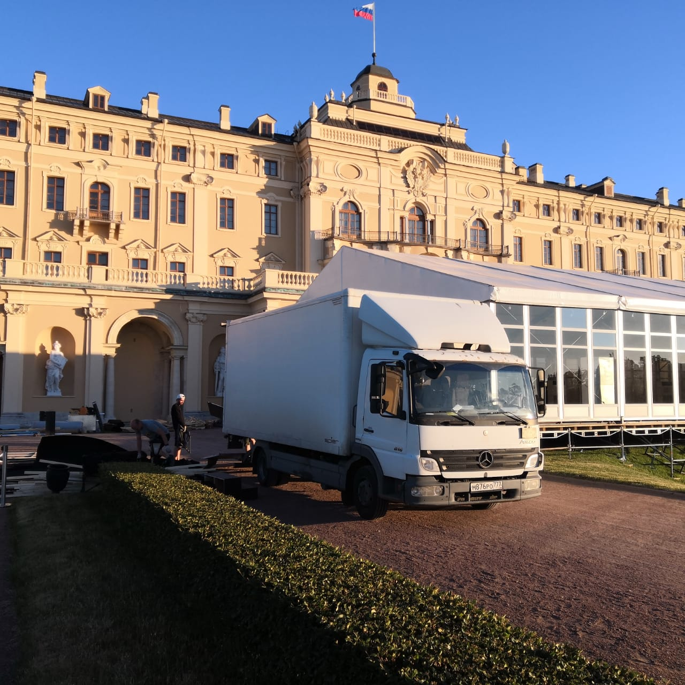

Заказ грузового Mercedes 5т
В 2005 году было представлено второе поколение коммерческих автомобилей Mercedes Atego. Данная модель является популярным на рынке Европы представителем грузовиков малотоннажного сегмента. Mercedes Atego - идеальный вариант для коммерческих грузоперевозок в городской черте, а также на междугородних маршрутах. Для модели предусмотрен широкий ассортимент грузовых кузовов: тент, изотермический вариант, рефрижератор, промтоварный фургон. Кабина Mercedes Atego обладает современным внешним видом. Интерьер Atego отличается простотой и практичностью.
Для заказа перейдите во вкладку Контакты.